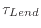

Next: Multiple banks Up: Defining account types Previous: Copying Godley Table input
The value of 0.1 means that the amount of money in the Patient account falls by one tenth every year (and therefore tapers towards zero). An equivalent way to express this is that the ``time constant'' for lending is the inverse of 1/10, or ten years. The next model uses a variable called , and gives it a value of 10:
As the simulation shows, the two models have precisely the same result numerically:
The advantage of the time constant approach is that it is defined in terms of the time that a process takes. A time constant of 10 says that, if this rate of lending was sustained (rather than declining as the account falls), then in precisely 10 years, the Patient account would be empty. The advantages of this formulation will be more obvious in the tutorial.